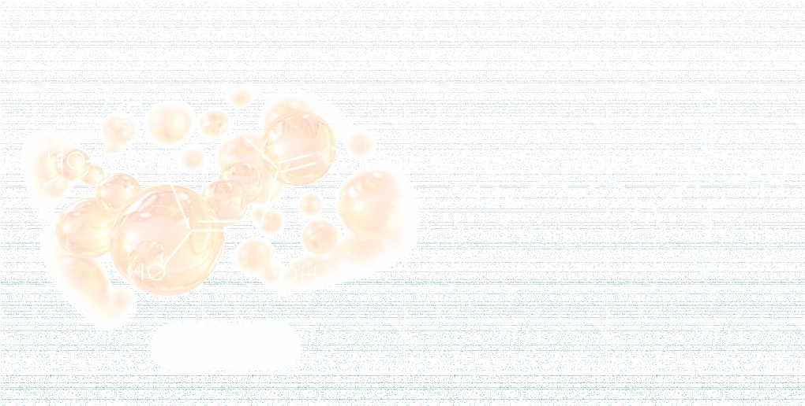
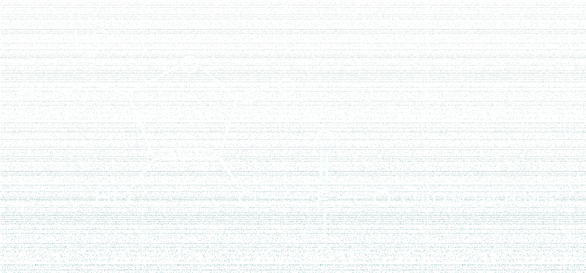
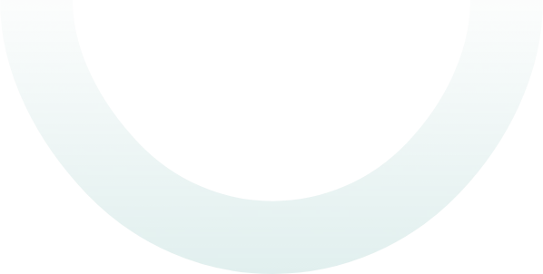

HOME
HOME- 보유기술
- 유기 · 무기합성
유기 · 무기합성
Organic Synthesis
유기합성
물질을 구조단위로 분석하여 우수한 효과를 내도록 디자인(Molecular Design)합니다.
합성 또는 생합성 기술을 통해 높은 효능과 안정성을 가진 다양한 종류의 비타민 유도체(비타민 A, C, E 유도체)를 생산하고 있습니다.
천연 세라마이드와 효능과 안정성이 동등하며 녹는점이 낮아 제형을 용이하게 하는 유사 세라마이드를 생산하고 있습니다.
Molecular Design
01
01 / REACTANTS

분자 구조를 분석하고 설계합니다.
02
02 / SYNTHESIZED INGREDIENT

Aminopropyl Ascorbyl Phosphate
Inorganic Synthesis
무기합성
당사는 무기 기능 소재를 제조할 수 있는 전문적인 무기 합성 기술을 보유하고 있습니다.
(근적외선 차단제, 메조포러스 실리카 등)

Mesoporous
Silicate
APPLICATION
- Catalyst
- Improved texture
- Absorbent
- Nano pores
- Drug Carrier
- Stabilizer